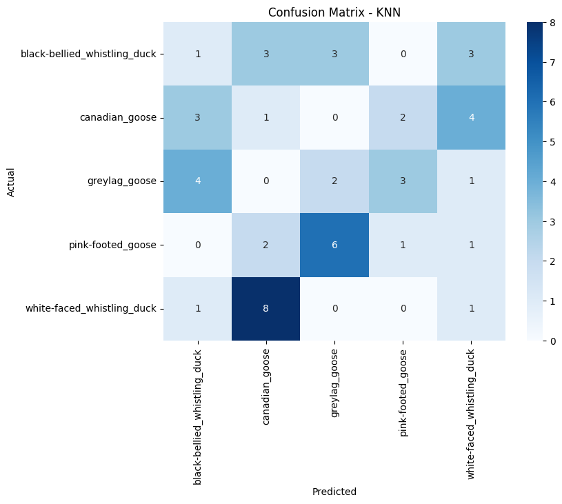
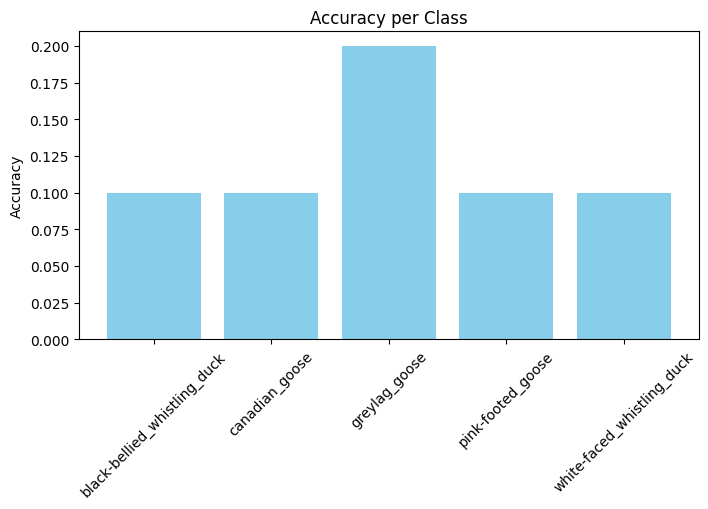

Evaluasi#
5.1 Metrik Evaluasi#
Metrik yang digunakan untuk menilai kinerja model:
Accuracy ≥ 85%
Mengukur proporsi prediksi yang benar terhadap seluruh data uji.Classification Report
Precision : ketepatan prediksi model
Recall : kemampuan model mengenali kelas yang benar
F1-score per kelas ≥ 80% digunakan sebagai metrik utama karena menyeimbangkan precision dan recall.
Confusion Matrix
Melihat distribusi prediksi benar dan salah
Mengidentifikasi pasangan kelas yang sering tertukar
Menganalisis pola kesalahan klasifikasi antar spesies
1. Import Library#
import joblib
import numpy as np
from sklearn.metrics import accuracy_score, f1_score, classification_report, confusion_matrix
import matplotlib.pyplot as plt
import seaborn as sns
from collections import Counter
Load Model Terbaik dan LabelEncoder#
# Pilih model terbaik sesuai hasil validation
best_model_file = "models/knn_best_model.pkl" # ganti sesuai modelmu: rf_best_model.pkl, xgb_best_model.pkl, ensemble_pipeline.pkl
best_model = joblib.load(best_model_file)
best_name = "KNN" # ganti sesuai model
Load Test Data#
X_test_scaled = np.load("data/processed/X_test_scaled.npy")
y_test = np.load("data/processed/y_test.npy")
# Load LabelEncoder
le = joblib.load("models/label_encoder.pkl")
y_test_num = le.transform(y_test)
# Pilih semua fitur (tidak menggunakan selected_idx)
X_test_final = X_test_scaled
Prediksi & Metrik Evaluasi#
import numpy as np
import joblib
# --- Load data test yang sudah discaling ---
X_test_scaled = np.load("data/processed/X_test_scaled.npy")
# --- Tentukan indeks fitur yang digunakan saat training (top 13 misal) ---
# Ini harus sama dengan yang dipakai saat training KNN
selected_idx = np.array([0, 1, 3, 5, 6, 7, 8, 9, 10, 12, 13, 14, 15]) # ganti sesuai top fitur
# --- Pilih fitur yang sama untuk test set ---
X_test_final = X_test_scaled[:, selected_idx]
# --- Load label encoder dan test label ---
le = joblib.load("models/label_encoder.pkl")
y_test = np.load("data/processed/y_test.npy")
y_test_num = le.transform(y_test)
# Sekarang X_test_final punya jumlah fitur yang sama dengan saat training KNN
y_test_pred = best_model.predict(X_test_final)
# Accuracy & F1-score
acc_test = accuracy_score(y_test_num, y_test_pred)
f1_test = f1_score(y_test_num, y_test_pred, average='macro')
print(f"Test Accuracy: {acc_test:.4f}")
print(f"Test F1-score (macro): {f1_test:.4f}")
# Classification Report
print("\nClassification Report:")
print(classification_report(y_test_num, y_test_pred, target_names=le.classes_))
Test Accuracy: 0.1200
Test F1-score (macro): 0.1208
Classification Report:
precision recall f1-score support
black-bellied_whistling_duck 0.11 0.10 0.11 10
canadian_goose 0.07 0.10 0.08 10
greylag_goose 0.18 0.20 0.19 10
pink-footed_goose 0.17 0.10 0.12 10
white-faced_whistling_duck 0.10 0.10 0.10 10
accuracy 0.12 50
macro avg 0.13 0.12 0.12 50
weighted avg 0.13 0.12 0.12 50
Confusion Matrix#
cm = confusion_matrix(y_test_num, y_test_pred)
plt.figure(figsize=(8,6))
sns.heatmap(cm, annot=True, fmt='d', cmap='Blues', xticklabels=le.classes_, yticklabels=le.classes_)
plt.xlabel("Predicted")
plt.ylabel("Actual")
plt.title(f"Confusion Matrix - {best_name}")
plt.show()

Accuracy per Class#
class_acc = {cls: accuracy_score(y_test_num[y_test_num==i], y_test_pred[y_test_num==i])
for i, cls in enumerate(le.classes_)}
plt.figure(figsize=(8,4))
plt.bar(class_acc.keys(), class_acc.values(), color='skyblue')
plt.xticks(rotation=45)
plt.ylabel("Accuracy")
plt.title("Accuracy per Class")
plt.show()
print("\nAccuracy per class:")
for cls, acc_cls in class_acc.items():
print(f"{cls}: {acc_cls:.2f}")

Accuracy per class:
black-bellied_whistling_duck: 0.10
canadian_goose: 0.10
greylag_goose: 0.20
pink-footed_goose: 0.10
white-faced_whistling_duck: 0.10
Status Success#
success = (acc_test >= 0.85) and (f1_test >= 0.80)
print(f"\nApakah model berhasil (Success)? {'YES' if success else 'NO'}")
Apakah model berhasil (Success)? NO
Insight Evaluasi#
Perbedaan Kelas Duck vs Goose: Model cenderung lebih mudah membedakan bebek dan angsa berdasarkan frekuensi suara.
Analisis Kesalahan Klasifikasi: Perhatikan kelas yang paling sering tertukar di confusion matrix (misal antar spesies angsa).
Faktor Penyebab Misclassification: Overlap frekuensi antar spesies, noise lingkungan, dan variasi kualitas rekaman. Insight ini digunakan untuk memahami keterbatasan model dan menjadi dasar pengembangan model selanjutnya.